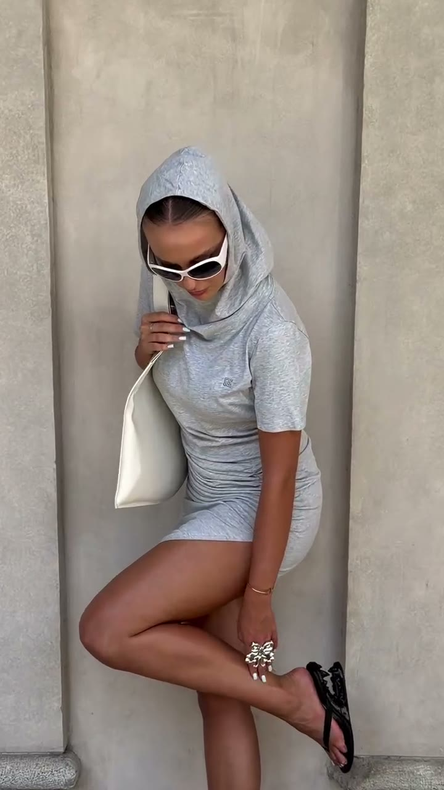
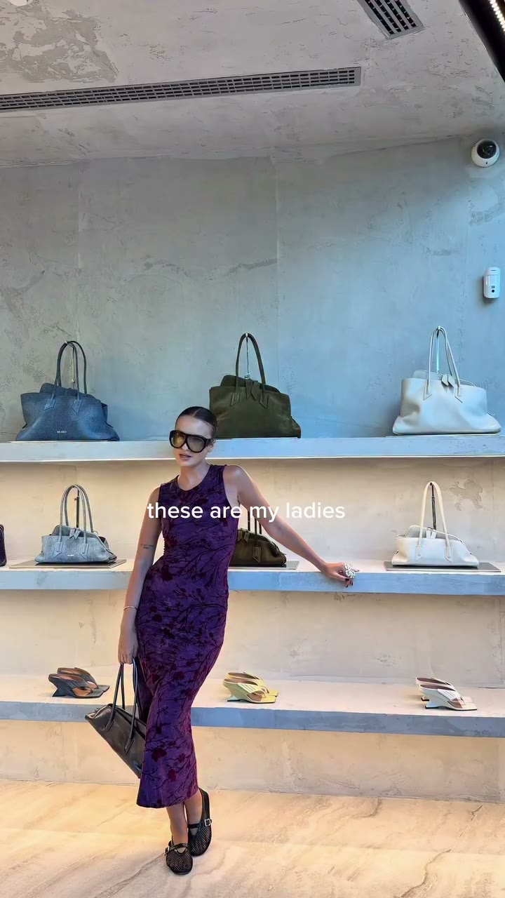

03 — About
Full-time diva
Three words from her bio. They set the tone for everything that follows.
Lelia M, Milano
Lelia M publishes as @lelusham, a fashion & lifestyle account based in Milan. The feed is built on short-form video: outfit try-ons in boutiques, unboxings, fashion week moments and walks through the city.
The captions are brief and bilingual, Italian and English, often a single question thrown to the audience: Which bag? Is it better?

Stone, marble and daylight. The city is the set, the outfit is the story.
The visual language
Vertical video, natural light, mostly handheld. The backdrops are Milanese: travertine steps, marble facades, boutique interiors. Against that neutral base, colour arrives through the clothes: a violet dress, a blue croc bag, an orange knit.
Text overlays are big, bold and uppercase. This site borrows that voice for its headlines and keeps the stone palette as the backdrop.
